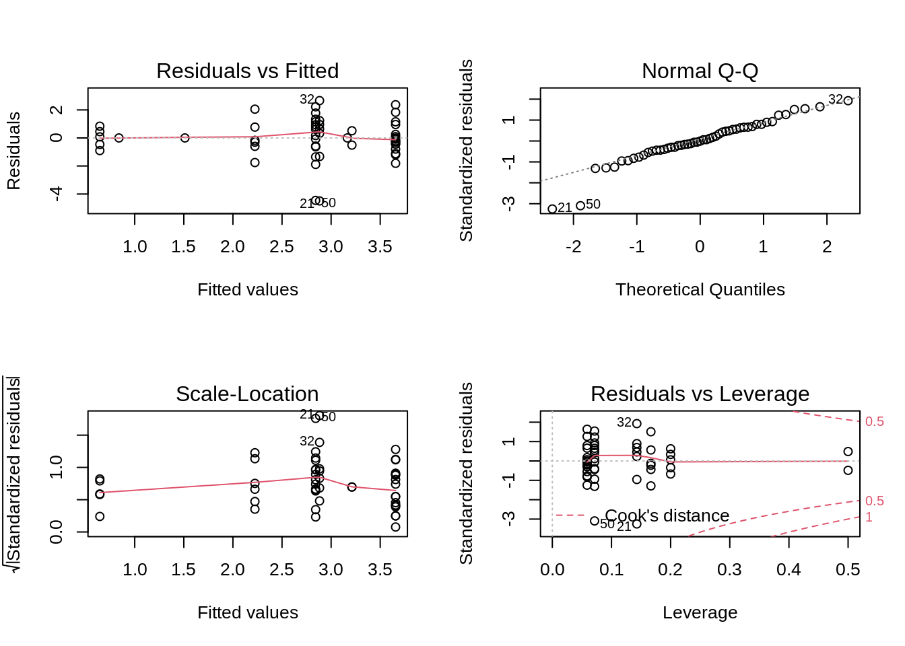

Chapter 5 t-test and ANOVA

5.1 Analysis of Variance (ANOVA)
Analysis of Variance (ANOVA) is a type of linear model for a continuous response variable and one or more categorical explanatory variables. The categorical explanatory variables can have any number of levels (groups). For example, the variable "colour" might have three levels: green, blue, and yellow. ANOVA tests whether the means of the response variable differ between the levels by comparing the variation within a group with the variation amon groups. For example, if blueberries differ in their mass depending on their colour.
ANOVA calculations are based on the sum of squares partitioning and compares the within-level variance to the between-level variance. If the between-level variance is greater than the within-level variance, this means that the levels affect the explanatory variable more than the random error (corresponding to the within-level variance), and that the explanatory variable is likely to be significantly influenced by the levels.

In the ANOVA, the comparison of the between-level variance to the within-level variance is made through the calculation of the F-statistic that correspond to the ratio of the mean sum of squares of the level (MSLev) on the mean sum of squares of the error (MS\(\epsilon\)). These two last terms are obtained by dividing their two respective sums of squares by their corresponding degrees of freedom, as is typically presented in a ANOVA table . Finally, the p-value of the ANOVA is calculated from the F-statistic that follows a Chi-square (χ2) distribution.
| Source of variation |
Degrees of freedom (df) |
Sums of squares | Mean squares | F-statistic | |
|---|---|---|---|---|---|
| Total | \(ra-1\) | \(SS_{t}=\sum(y_{i}-\overline{y})^{2}\) | |||
| Facteur A | \(a-1\) | \(SS_{f}=\sum(\hat{y_{i}}-\overline{y})^{2}\) | \(MS_{f}=\frac{SS_{f}}{(a-1)}\) | \(F=\frac{MS_{f}} {MS_{E}}\) | |
| Error | \(a(r-1)\) | \(SS_{\epsilon}=\sum(y_{i}-\hat{y_{i}})^{2}\) | \(MS_{\epsilon}=\frac{SS_{\epsilon}}{a(r-1)}\) |
\(a\): number of levels of the explanatory variable A
\(r\): number of replicates per level
\(\overline{y}\): general mean of the explanatory variable
\(\hat{y_{i}}\) : mean of the explanatory variable for all the replicates of the level i.
5.1.1 Types of ANOVA
- One-way ANOVA
One categorical explanatory variable with 2 or more levels. If there are 2 levels a t-testcan be used alternatively. - Two-way ANOVA (see section
4.1.3)
- 2 categorical explanatory variables or more,
- Each categorical explanatory variable can have multiple levels,
- The interactions between each categorical explanatory variable can be tested.
- 2 categorical explanatory variables or more,
- Repeated measures
ANOVA can be used for repeated measures, but we won’t cover this today. Linear Mixed-effect Models can also be used for this kind of data (see Workshop 6).
5.1.2 T-test
When you have a single explanatory variable which is qualitative and only have two levels, you can run a student’s T-test to test for a difference in the mean of the two levels. If appropriate for your data, you can choose to test a unilateral hypothesis. This means that you can test the more specific assumption that one level has a higher mean than the other, rather than that they simply have different means.Note that robustness of this test increases with sample size and is higher when groups have equal sizes
For the t-test, the t statistic used to find the p-value calculation is calculated as: \(t = (\overline{y_{1}}-\overline{y_{2}})/\sqrt{\frac{s_{1}^2} n_{1} + \frac{s_{2}^2} n_{2}}\)
where
\(\overline{y_{1}}\) and \(\overline{y_{2}}\) are the means of the response variable y for group 1 and 2, respectively,
\(s_{1}^2\) and \(s_{2}^2\) are the variances of the response variable y for group 1 and 2, respectively,
\(n_{1}\) and \(n_{2}\) are the sample sizes of groups 1 and 2, respectively.
Note that the t-test is mathematically equivalent to a one-way ANOVA with 2 levels.
5.1.2.1 Assumptions
If the assumptions of the t-test are not met, the test can give misleading results. Here are some important things to note when testing the assumptions of a t-test.
- Normality of data
As with simple linear regression, the residuals need to be normally distributed. If the data are not normally distributed, but have reasonably symmetrical distributions, a mean which is close to the centre of the distribution, and only one mode (highest point in the frequency histogram) then a t-test will still work as long as the sample is sufficiently large (rule of thumb ~30 observations). If the data is heavily skewed, then we may need a very large sample before a t-test works. In such cases, an alternate non-parametric test should be used. - Homoscedasticity
Another important assumption of the two-sample t-test is that the variance of your two samples are equal. This allows you to calculate a pooled variance, which in turn is used to calculate the standard error. If population variances are unequal, then the probability of a Type I error is greater than α.
The robustness of the t-test increases with sample size and is higher when groups have equal sizes.
We can test for difference in variances among two populations and ask what is the probability of taking two samples from two populations having identical variances and have the two sample variances be as different as are \(s_{1}^2\) and \(s_{2}^2\).
To do so, we must do the variance ratio test (i.e. an F-test).
5.1.2.2 Violation of assumptions
If variances between groups are not equal, it is possible to use corrections, like the Welch correction. If assumptions cannot be respected, you can transform your data (log or square root for example) or use the non-parametric equivalent of t-test, the Mann-Whitney test. Finally, if the two groups are not independent (e.g. measurements on the same individual at 2 different years), you should use a Paired t-test.
5.1.2.3 Running a t-test
In R, t-tests are implemented using the function t.test.
where:
-Y is the response variable
-X2 is a qualitative variable with two levels
-data is the name given to your data set
-alternative refers to the alternative hypothesis. 'two.sided' is the default setting. You can also choose 'less' or 'greater'. For more details, look this section.
-var.eqal, if true, this increases the robustness of the test. But we need to test for it prior to testing.
Let’s look at an exemple with bird diet data.
For example, let’s test the mass difference between aquatic and non-aquatic birds qith the column Aquatic.
First, we can start with visualizing the data:

There seem to be a difference just by looking at the boxplot. Let’s make sure are assumptions are met before doing the test.
Note: we do not need to test the assumption of normally distributed data since we already log transformed the data above
##
## F test to compare two variances
##
## data: logMass by Aquatic
## F = 1.0725, num df = 38, denom df = 14, p-value = 0.9305
## alternative hypothesis: true ratio of variances is not equal to 1
## 95 percent confidence interval:
## 0.3996428 2.3941032
## sample estimates:
## ratio of variances
## 1.072452Here, we show that the ratio of variances is not statistically different from 1, therefore variances are equal, and we proceeded with our t-test.
# We are now ready to run the t-test
ttest1 <- t.test(x = bird$logMass[bird$Aquatic == 0], y = bird$logMass[bird$Aquatic ==
1], var.equal = TRUE)
# or equivalently
ttest1 <- t.test(logMass ~ Aquatic, var.equal = TRUE, data = bird)
ttest1##
## Two Sample t-test
##
## data: logMass by Aquatic
## t = -7.7707, df = 52, p-value = 2.936e-10
## alternative hypothesis: true difference in means between group 0 and group 1 is not equal to 0
## 95 percent confidence interval:
## -3.838340 -2.262829
## sample estimates:
## mean in group 0 mean in group 1
## 3.645998 6.696582Since p < 0.05, the hypothesis of no difference between the two bird types (Aquatic vs. terrestrial) was rejected.
5.1.2.4 Running a t-test with lm()
Do not forget that a t test is simply a linear model or an ANOVA for a factor with two levels. You can reach the same results with :
## Analysis of Variance Table
##
## Response: logMass
## Df Sum Sq Mean Sq F value Pr(>F)
## Aquatic 1 100.816 100.82 60.385 2.936e-10 ***
## Residuals 52 86.817 1.67
## ---
## Signif. codes: 0 '***' 0.001 '**' 0.01 '*' 0.05 '.' 0.1 ' ' 1When variances are equal (i.e., two-sample t-test), we can show that t2 = F:
## t
## 60.3845## [1] 60.3845 NA5.1.2.5 Unilateral t-test
The alternative option of the t.test function allows for the use of
unilateral t-test. By default, t.test() use 'two-sided', which tests whether the means are different from each other. If you want to test whether one mean is higher than the other one, you can use 'less' (\(\overline{y_{1}}\) < \(\overline{y_{2}}\)) or 'greater' (\(\overline{y_{1}}\) > \(\overline{y_{2}}\)). For example, if users want to test if non-aquatic birds are less heavy than aquatic birds, the function can be written:
# Unilateral T-test
uni.ttest1 <- t.test(logMass ~ Aquatic, var.equal = TRUE, data = bird,
alternative = "less")In the R output, called by uni.ttest1, the results of the t-test
appear in the third line:
##
## Two Sample t-test
##
## data: logMass by Aquatic
## t = -7.7707, df = 52, p-value = 1.468e-10
## alternative hypothesis: true difference in means between group 0 and group 1 is less than 0
## 95 percent confidence interval:
## -Inf -2.393147
## sample estimates:
## mean in group 0 mean in group 1
## 3.645998 6.696582In this case, the calculated t-statistic is t = -7.7707 with df = 52 degrees of freedom that gives a p-value of p-value = 1.468e-10. As the calculated p-value is inferior to 0.05, the null hypothesis is rejected. Thus, aquatic birds are significantly heavier than non-aquatic birds.
We could have tested whether non-aquatic birds were heavier than aquatic bird. By testing the opposite, we get the same t value (but negative) and a p-value reflected accordingly. We can therefore conclude that non-aquatic birds are not significantly heavier than aquatic birds.
# Test de t en spécifiant l'argument 'alternative'
uni.ttest1 <- t.test(logMass ~ Aquatic, var.equal = TRUE, data = bird,
alternative = "greater")
uni.ttest1##
## Two Sample t-test
##
## data: logMass by Aquatic
## t = -7.7707, df = 52, p-value = 1
## alternative hypothesis: true difference in means between group 0 and group 1 is greater than 0
## 95 percent confidence interval:
## -3.708022 Inf
## sample estimates:
## mean in group 0 mean in group 1
## 3.645998 6.6965825.1.3 Running an ANOVA
The t-test is only for a single categorical explanatory variable with 2 levels. For all other linear models with categorical explanatory variables we use ANOVA.
When the ANOVA detects a significant difference between groups, it does not tell you which group (or groups) differs from the others.A commonly used post-hoc test to answer this question is the Tukey’s test. You may also compare between groups using planned comparisons or contrasts. This is more elegant, because it expects that you have an a priori expectation for the differences between groups.
5.1.4 Verifying assumptions
As with the simple linear regression and t-test, ANOVA must meet the four assumptions of linear models. Below are some tips in how to test these assumptions for an ANOVA.
- Normal distribution
The residuals of ANOVA model can once again be visualised in the normal QQplot. If the residuals lie linearly on the 1:1 line of the QQplot, they can be considered as normally distributed. If not, the ANOVA results cannot be interpreted. - Homoscedasticity
To be valid, ANOVA must be performed on models with homogeneous variance of the residuals. This homoscedasticity can be verified using either the residuals vs fitted plot or the scale-location plot of the diagnostic plots. If these plots present equivalent spread of the residuals for each of the fitted values, then the residuals variance can be considered homogeneous.
A second way to assess the homogeneity of residuals variance is to perform a Bartlett test on the anova model using the functionbartlett.test. If the p-value of this test is superior to 0.05, the null hypothesis H0: s12 = s22 =... = sj2 =... = sn2 is accepted and the homoscedasticity assumption is respected.
Usual transformations of explanatory variables can be used if the homogeneity of residuals variance is not met. - Additivity
In addition to the assumption testing, it is important to consider whether the effects of two factors are additive. The effects are additive if the effect of one factor remains constant over all levels of the other factor, and that each factor influences the response variable independently of the other factor(s).
If assumptions are violated your can try to transform your data, which could potentially equalize variances and normalize residuals, and can convert a multiplicative effect into an additive effect. Or, if you can’t (or don’t want to) transform your data, the non-parametric equivalent of ANOVA is Kruskal-Wallis test.
5.1.4.1 Example with bird data
We are interested to test if maximal abundance of birds depend on the diet.
First, let’s visualize the data using boxplot(). Recall that by default, R will order you groups in
alphabetical order. We can reorder the groups according to the median of
each Diet level.

# Relevel factors
med <- sort(tapply(bird$logMaxAbund, bird$Diet, median))
boxplot(logMaxAbund ~ factor(Diet, levels = names(med)), data = bird,
col = c("white", "lightblue1", "skyblue1", "skyblue3", "skyblue4")) Another way to graphically view the effect sizes is to use
Another way to graphically view the effect sizes is to use plot.design(). This function will illustrate the levels of a particular factor along a vertical line, and the overall value of the response is drawn as a horizontal line.

There seem to be some differences. We now need to check the assumption to our model. Note: We need to perform the ANOVA to look at the residuals, however, results are not to be interpreted until we have verified the assumptions.
# Plot for diagnostics
aov1 <- aov(logMaxAbund ~ Diet, data = bird)
opar <- par(mfrow = c(2, 2))
plot(aov1)
par(opar) Ideally the first diagnostic plot should show similar scatter for each Diet level. We can use only these graph to verify our assumptions, however, we can also use the Shapiro’s, Bartlett’s tests or Levene’s test. Note:Levene’s test performs better, but has a slightly higher Type II error.
Ideally the first diagnostic plot should show similar scatter for each Diet level. We can use only these graph to verify our assumptions, however, we can also use the Shapiro’s, Bartlett’s tests or Levene’s test. Note:Levene’s test performs better, but has a slightly higher Type II error.
##
## Shapiro-Wilk normality test
##
## data: resid(aov1)
## W = 0.97995, p-value = 0.4982# Test assumption of homogeneity of variance Bartlett's
# test
bartlett.test(logMaxAbund ~ Diet, data = bird)##
## Bartlett test of homogeneity of variances
##
## data: logMaxAbund by Diet
## Bartlett's K-squared = 7.4728, df = 4, p-value = 0.1129## Levene's Test for Homogeneity of Variance (center = median)
## Df F value Pr(>F)
## group 4 2.3493 0.06717 .
## 49
## ---
## Signif. codes: 0 '***' 0.001 '**' 0.01 '*' 0.05 '.' 0.1 ' ' 1The tests are non-significant, therefore residuals are assumed to be normally distributed and variances are assumed to be equal.
Let’s now run the ANOVA. In R, ANOVA can be called either directly with the aov function, or with the anova function performed on a linear model previously implemented with lm:
5.1.5 Model output
Once your ANOVA model has been validated, its results can be
interpreted. The R output of ANOVA model depends of the function that
has been used to implement the ANOVA. If the aov function is used to
implement the ANOVA model
the results of the ANOVA can be visualized using the function
On the other hand, if lm() is used
the ANOVA results must be called using the function
In both cases, the R output is as follows:
## Df Sum Sq Mean Sq F value Pr(>F)
## Diet 4 27.07 6.768 2.836 0.0341 *
## Residuals 49 116.92 2.386
## ---
## Signif. codes: 0 '***' 0.001 '**' 0.01 '*' 0.05 '.' 0.1 ' ' 1This R output corresponds exactly to the ANOVA table of your model. This output also present the degrees of freedom, the sum of squares, the mean sum of squares and the F-value previously explained. For this example, the diet significantly influences the abundance of birds as the p-value is inferior to 0.05. The null hypothesis can then be rejected meaning that at least one of the diet treatments influenced the abundance differently than the other treatments.
5.1.6 Complementary test
Importantly, ANOVA cannot identify which treatment is different from the
others in terms of response variable. It can only identify that a
difference is present. To determine the location of the difference(s),
post-hoc tests that compare the levels of the explanatory variables
(i.e. the treatments) two by two, must be performed. While several
post-hoc tests exist (e.g. Fischer’s least significant difference,
Duncan’s new multiple range test, Newman-Keuls method, Dunnett’s test,
etc.), the Tukey’s range test is used in this example using the function
TukeyHSD as follows:
# Where does the Diet difference lie?
TukeyHSD(aov(anov1), ordered = T)
# or equivalently
TukeyHSD(aov1, ordered = T)The R output for this test gives a table containing all the two by two
comparisons of the explanatory variable levels and identify which
treatment differ from the others:
## Tukey multiple comparisons of means
## 95% family-wise confidence level
## factor levels have been ordered
##
## Fit: aov(formula = logMaxAbund ~ Diet, data = bird)
##
## $Diet
## diff lwr upr p adj
## Vertebrate-InsectVert 0.7746576 -2.56640638 4.115722 0.9645742
## Insect-InsectVert 1.4815601 -1.76264078 4.725761 0.6965047
## Plant-InsectVert 2.0364840 -2.33799553 6.410964 0.6812494
## PlantInsect-InsectVert 2.4539424 -0.80660217 5.714487 0.2235587
## Insect-Vertebrate 0.7069025 -0.89043156 2.304237 0.7204249
## Plant-Vertebrate 1.2618265 -2.07923748 4.602890 0.8211024
## PlantInsect-Vertebrate 1.6792848 0.04901254 3.309557 0.0405485
## Plant-Insect 0.5549239 -2.68927692 3.799125 0.9884504
## PlantInsect-Insect 0.9723823 -0.44885612 2.393621 0.3117612
## PlantInsect-Plant 0.4174584 -2.84308619 3.678003 0.9961844In this case, the only significant difference in abundance occurs between the PlantInsect diet and the Vertebrate diet.
5.1.7 Plotting
After having verified the assumptions of your ANOVA model, interpreted
the ANOVA table and differentiated the effect of the treatments using
post-hoc tests or contrasts, the ANOVA results can be graphically
illustrated using a barplot. This shows the response variable as a
function of the explanatory variable levels, where standard errors can
be superimposed on each bar as well as the different letters
representing the treatment group (according to the post-hoc test).
# Graphical illustration of ANOVA model using barplot()
sd <- tapply(bird$logMaxAbund, list(bird$Diet), sd)
means <- tapply(bird$logMaxAbund, list(bird$Diet), mean)
n <- length(bird$logMaxAbund)
se <- 1.96 * sd/sqrt(n)
bp <- barplot(means, col = c("white", "lightblue1", "skyblue1",
"skyblue3", "skyblue4"), ylab = expression("log"[10] * "(Maximum Abundance)"),
xlab = "Diet", ylim = c(0, 5))
# Add vertical se bars
segments(bp, means - se, bp, means + se, lwd = 2)
# and horizontal lines
segments(bp - 0.1, means - se, bp + 0.1, means - se, lwd = 2)
segments(bp - 0.1, means + se, bp + 0.1, means + se, lwd = 2)
# add a line at 0
abline(h = 0)
5.1.8 Going further: Contrasts
Contrasts compare each level of a factor to a baseline level and therefore, we can determine if each level of a factor are significantly different from each other.
Contrasts are based on an a priori hypothesis, which makes them much more robust than a posteriori comparison like Tukey’s test. With contrasts, groups can be compounded of one or many levels of a factor, and we can test basic hypothesis (ex: μ1 = μ2) or more complex hypothesis (ex: (μ1 + μ2)/3 == μ3).
Important requirement The number of comparisons has to be lower or equal to the number of degrees of freedom of the ANOVA. Comparisons have to be independent from one another.
For ANOVAs where explanatory variables are categorical, the intercept is the baseline group and corresponds to the mean of the first (alphabetically) level. By calculating the intercept and coefficient estimates of each Diet level, What do you notice?
## Insect InsectVert Plant PlantInsect Vertebrate
## 2.656938 1.175378 3.211862 3.629321 1.950036## (Intercept) DietInsectVert DietPlant DietPlantInsect DietVertebrate
## 2.6569384 -1.4815601 0.5549239 0.9723823 -0.7069025## (Intercept)
## 1.175378## (Intercept)
## 3.211862Mean for Insect corresponds to the intercept of our ANOVA anov1.
You can also reach those results by using the function summary.lm() or `summary(). This output performs a linear regression for each level of the explanatory variable and calculates their associated
parameters.
Note: When the ANOVA model was implemented with the aov
function, this output is called using the function
summary.lm(). Use the function summary() when the ANOVA was implemented
with the lm function.
##
## Call:
## lm(formula = logMaxAbund ~ Diet, data = bird)
##
## Residuals:
## Min 1Q Median 3Q Max
## -4.2664 -0.7592 -0.2028 1.0908 3.5938
##
## Coefficients:
## Estimate Std. Error t value Pr(>|t|)
## (Intercept) 2.6569 0.3454 7.692 5.66e-10 ***
## DietInsectVert -1.4816 1.1456 -1.293 0.2020
## DietPlant 0.5549 1.1456 0.484 0.6303
## DietPlantInsect 0.9724 0.5019 1.938 0.0585 .
## DietVertebrate -0.7069 0.5640 -1.253 0.2161
## ---
## Signif. codes: 0 '***' 0.001 '**' 0.01 '*' 0.05 '.' 0.1 ' ' 1
##
## Residual standard error: 1.545 on 49 degrees of freedom
## Multiple R-squared: 0.188, Adjusted R-squared: 0.1217
## F-statistic: 2.836 on 4 and 49 DF, p-value: 0.0341Users can note that the last line of this R output corresponds exactly to the previous R output shown in the ANOVA table. The F-statistic of
the ANOVA model and its associated p-value (i.e. 2.836 and 0.0341), are
the same one as the values obtained from the ANOVA table, indicating
diet explains the abundance better than a null model, and so, diet
significantly influence the abundance. The goodness-of-fit of the ANOVA
model (i.e. adjusted R-square value) appears in the second to last line
of this output. In this case, diet explains 12.17% of the abundance
variability.
Contrasts adjust a linear regression of the response variable as
function of each level of the categorical explanatory variable
separately. In this case, 5 linear regressions (corresponding to the
five lines of the coefficients table of the R output) are calculated by
the lm function as the diet variable contains 5 levels. By default, the
baseline level corresponding to the intercept is the first level of
explanatory variables ranked in alphabetical order. So in this case, the
Insect diet is automatically used as a baseline in R. In the R output,
the coefficient estimate of the baseline level (here, 1.1539) is first
compared to 0 using a t-test (in this case, the t-test is significant
with a p-value of 5.66e-10), while the coefficient estimates of the
other explanatory variable level are compared to the baseline level. In
this case, only the PlantInsect diet differs from the Insect diet, with
an associated p-value of 0.0585.
In other words, this R output allows us to determine the mean of the
response variable for each of the diet levels, for example:
LogMaxAbund = 1.1539 for the Insect diet,
LogMaxAbund = 1.1539 – 0.6434 for the InsectVert diet,
LogMaxAbund = 1.1539 + 0.2410 for the Plant diet,
etc.
As this type of contrasts compares each level of the explanatory
variable to a baseline level, they are called contr.treatment and
constitute the default method of the lm function in R. The baseline
level can, however, be changed using the relevel function. For
example, the following lines compare each diet treatment to the Plant diet, now defined as the
baseline level.
bird$Diet2 <- relevel(bird$Diet, ref = "Plant")
anov_rl <- lm(logMaxAbund ~ Diet2, data = bird)
summary(anov_rl)##
## Call:
## lm(formula = logMaxAbund ~ Diet2, data = bird)
##
## Residuals:
## Min 1Q Median 3Q Max
## -4.2664 -0.7592 -0.2028 1.0908 3.5938
##
## Coefficients:
## Estimate Std. Error t value Pr(>|t|)
## (Intercept) 3.2119 1.0923 2.941 0.00499 **
## Diet2Insect -0.5549 1.1456 -0.484 0.63026
## Diet2InsectVert -2.0365 1.5447 -1.318 0.19351
## Diet2PlantInsect 0.4175 1.1513 0.363 0.71848
## Diet2Vertebrate -1.2618 1.1798 -1.070 0.29006
## ---
## Signif. codes: 0 '***' 0.001 '**' 0.01 '*' 0.05 '.' 0.1 ' ' 1
##
## Residual standard error: 1.545 on 49 degrees of freedom
## Multiple R-squared: 0.188, Adjusted R-squared: 0.1217
## F-statistic: 2.836 on 4 and 49 DF, p-value: 0.0341## Analysis of Variance Table
##
## Response: logMaxAbund
## Df Sum Sq Mean Sq F value Pr(>F)
## Diet2 4 27.071 6.7677 2.8363 0.0341 *
## Residuals 49 116.918 2.3861
## ---
## Signif. codes: 0 '***' 0.001 '**' 0.01 '*' 0.05 '.' 0.1 ' ' 1You can also reorder multiple levels according to median, instead of the alphabetical order:
med <- sort(tapply(bird$logMaxAbund, bird$Diet, median))
bird$Diet2 <- factor(bird$Diet, levels = names(med))
anov2 <- lm(logMaxAbund ~ Diet2, data = bird)
summary(anov2)##
## Call:
## lm(formula = logMaxAbund ~ Diet2, data = bird)
##
## Residuals:
## Min 1Q Median 3Q Max
## -4.2664 -0.7592 -0.2028 1.0908 3.5938
##
## Coefficients:
## Estimate Std. Error t value Pr(>|t|)
## (Intercept) 1.1754 1.0923 1.076 0.2872
## Diet2Vertebrate 0.7747 1.1798 0.657 0.5145
## Diet2Insect 1.4816 1.1456 1.293 0.2020
## Diet2Plant 2.0365 1.5447 1.318 0.1935
## Diet2PlantInsect 2.4539 1.1513 2.131 0.0381 *
## ---
## Signif. codes: 0 '***' 0.001 '**' 0.01 '*' 0.05 '.' 0.1 ' ' 1
##
## Residual standard error: 1.545 on 49 degrees of freedom
## Multiple R-squared: 0.188, Adjusted R-squared: 0.1217
## F-statistic: 2.836 on 4 and 49 DF, p-value: 0.0341## Analysis of Variance Table
##
## Response: logMaxAbund
## Df Sum Sq Mean Sq F value Pr(>F)
## Diet2 4 27.071 6.7677 2.8363 0.0341 *
## Residuals 49 116.918 2.3861
## ---
## Signif. codes: 0 '***' 0.001 '**' 0.01 '*' 0.05 '.' 0.1 ' ' 1The contrasts coefficient matrix of these contr.treatment comparisons can be called by
## Insect InsectVert PlantInsect Vertebrate
## Plant 0 0 0 0
## Insect 1 0 0 0
## InsectVert 0 1 0 0
## PlantInsect 0 0 1 0
## Vertebrate 0 0 0 1where each column corresponds to a comparison to the baseline Plant and
each line to a diet level. For example, the first comparison compares
the Insect diet to the Plant diet, the second one compares the
InsectVert diet to the Plant diet, etc.
The default contrasts contr.treatment is not orthogonal, meaning that the sum of the products of their coefficients is not null. We can verify if our previous contrasts are orthogonal by checking two things:
- Coefficients must sum to 0
- Any two contrast columns must sum to 0
## [1] 1## [1] 0The first column equal to 1, which mean our contrasts are not orthogonal.
Orthogonality is important to make sure our contrasts are independant. You can use Helmert or polynomial contrasts to remedy the situation. Helmert contrast will contrast the second level with the first, the third with the average of the first two, and so on.
## [1] 0## [1] 0Our conditions are now equal to 0 and our contrasts are orthogonal.
##
## Call:
## lm(formula = logMaxAbund ~ Diet, data = bird)
##
## Residuals:
## Min 1Q Median 3Q Max
## -4.2664 -0.7592 -0.2028 1.0908 3.5938
##
## Coefficients:
## Estimate Std. Error t value Pr(>|t|)
## (Intercept) 2.5247 0.3369 7.495 1.14e-09 ***
## Diet1 -0.7408 0.5728 -1.293 0.2020
## Diet2 0.4319 0.4111 1.051 0.2986
## Diet3 0.3203 0.1603 1.999 0.0512 .
## Diet4 -0.1437 0.1206 -1.191 0.2393
## ---
## Signif. codes: 0 '***' 0.001 '**' 0.01 '*' 0.05 '.' 0.1 ' ' 1
##
## Residual standard error: 1.545 on 49 degrees of freedom
## Multiple R-squared: 0.188, Adjusted R-squared: 0.1217
## F-statistic: 2.836 on 4 and 49 DF, p-value: 0.0341Users can also create their own contrasts coefficient matrix in order to perform the comparison they desire using the contrasts function.For example, the following lines create this contrasts coefficient matrix:
contrasts(bird$Diet2) <- cbind(c(4, -1, -1, -1, -1), c(0, 1,
1, -1, -1), c(0, 0, 0, 1, -1), c(0, 1, -1, 0, 0))
contrasts(bird$Diet2)## [,1] [,2] [,3] [,4]
## Plant 4 0 0 0
## Insect -1 1 0 1
## InsectVert -1 1 0 -1
## PlantInsect -1 -1 1 0
## Vertebrate -1 -1 -1 0that compares:
- the
Plantdiet to all the other diets in the first comparison,
- the
InsectVertand theInsectdiets to thePlantInsectand theVertebratediets in the second one,
- the
PlantInsectdiet to theVertebratediet in the third one,
- and the
Insectdiet to theInsectVertdiet in the fourth one.
Thus, for each column, the treatments with identical contrasts
coefficient belong to the same two by two comparison group (e.g. in the
column 1, the four treatment with a -1 coefficient belong to the first
comparison group and are altogether compare to the second group
corresponding to the treatment with a different coefficient, here the
Plant diet with a coefficient 4).
Let’s verify the orthogonality of our contrasts:
## [1] 0## [1] 0These constrats are orthogonal and could be used to compare factor levels with each other.
Other conventional contrast coefficient matrices are already programmed in R:
help(contrasts)
5.2 Two-way ANOVA
In the above section, the ANOVA models had a single categorical variable. We can create ANOVA models with multiple categorical explanatory variables. When there are two categorical explanatory variables, we refer to the model as a two-way ANOVA. A two-way ANOVA tests several hypotheses: that there is no difference in mean among levels of variable A; that there is no difference in mean among levels of variable B; and that there is no interaction between variables A and B. A significant interaction means the mean value of the response variable for each level of variable A changes depending on the level of B. For example, perhaps relationship between the colour of a fruit and its mass will depend on the plant species: if so, we say there is an interaction between colour and species.
The one-way ANOVA table has to be rewritten to add the second explanatory term as well as the interaction term. Thus, a two-way ANOVA table corresponds to:
| Source of variation |
Degrees of freedom (df) |
Sums of squares | Mean squares | F-statistic |
|---|---|---|---|---|
| Total | \(abr-1\) | \(SS_{t}=\sum_{i,j,k}{}(y_{ijk}-\overline{y})^2\) | ||
| Cells | \(ab-1\) | \(SS_{Cells}=\sum_{i,j}(\overline{y}_{ij}-\overline{y})^2\) | ||
| Within- cells (error) |
\(ab(r-1)\) | \(SS_{\epsilon}=\sum_{i,j,k}(y_{ijk}-\overline{y}_{ij})^2\) | \(MS_{\epsilon}=\frac{SS_{\epsilon}}{ab(r-1)}\) | |
| Factor A | \(a-1\) | \(SS_{A}= rb\sum_{i}(\overline{y}_{i.}-\overline{y})^2\) | \(MS_{A}=\frac{SS_{A}}{a-1}\) | \(F_{A}=\frac{MS_{A}}{MS_{\epsilon}}\) |
| Factor B | \(b-1\) | \(SS_{B}= ra\sum_{j}(\overline{y}_{.j}-\overline{y})^2\) | \(MS_{B}=\frac{SS_{B}}{b-1}\) | \({F_B}=\frac{MS_{B}}{MS_\epsilon}\) |
| Interaction AB |
\((a-1)(b-1)\) | \(SS_{AB}= r\sum_{i,j,k}(\overline{y}_{..k}-\overline{y}_{.jk}-\overline{y}_{i.k})^2\) | \(MS_{AB}=\frac{SS_{AB}}{(a-1)(b-1)}\) | \(F_{AB}=\frac{MS_{AB}}{MS_\epsilon}\) |
a: number of levels of the explanatory variable A
b: number of levels of the explanatory variable B
r: number of replicates per treatment
\(\epsilon\) : error
5.2.1 4.1 Running a two-way ANOVA
In R, a two-way ANOVA model is implemented in the same fashion as a
one-way ANOVA using the function lm.
- One-way ANOVA
- Two-way ANOVA
The * symbol indicates that the main effects, as well, as their interaction will be included in the model.
Always start reading the output from the interaction term, then proceed to the main effects. According to law of parsimony, select the model that explain the most variance with the least model parameters as possible: If the multiplicative effect (interaction) is non-signficant, you may consider a model with only the additive effects.
You can then remove the interaction and run the model again.
If use the + symbol, the main effects, but their interaction are not included.
CHALLENGE 2
Examine the effects of the factors Diet, Aquatic, and their interaction on the maximum bird abundance.
Recall: Before interpreting the ANOVA results, the model must first be
validated by verifying the statistical assumptions of ANOVA, namely
the:
- Normal distribution of the model residuals
- Homoscedasticty of the residuals variance
This verification can be done using the four diagnostic plots as
previously explained for one-way ANOVA.
Click to see the solution to Challenge 2!
Assumptions
## Warning: not plotting observations with leverage one:
## 5, 6, 26
Assumptions are met so we use the anova command to visualize the ANOVA table of the
model:
## Analysis of Variance Table
##
## Response: logMaxAbund
## Df Sum Sq Mean Sq F value Pr(>F)
## Diet 4 27.071 6.7677 3.0378 0.02669 *
## Aquatic 1 1.688 1.6878 0.7576 0.38870
## Diet:Aquatic 3 14.978 4.9926 2.2410 0.09644 .
## Residuals 45 100.252 2.2278
## ---
## Signif. codes: 0 '***' 0.001 '**' 0.01 '*' 0.05 '.' 0.1 ' ' 1In this case, the only significant term of the model is the diet factor
as the p-value associated with the interaction term is not significant,
meaning that the synergic effect of aquatic/non-aquatic type of birds
does not influence the abundance. The significance of the interaction
can also be determined by comparing two nested ANOVA models, i.e. a
first model with the interaction and a second model without the
interaction, using the anova command:
## Analysis of Variance Table
##
## Model 1: logMaxAbund ~ Diet + Aquatic
## Model 2: logMaxAbund ~ Diet * Aquatic
## Res.Df RSS Df Sum of Sq F Pr(>F)
## 1 48 115.23
## 2 45 100.25 3 14.978 2.241 0.09644 .
## ---
## Signif. codes: 0 '***' 0.001 '**' 0.01 '*' 0.05 '.' 0.1 ' ' 1As the only difference between the two compared ANOVA models is the
presence of the interaction term, this R output presents the
significance of this term. In this case, the interaction term is not
significant and can be dropped from the final ANOVA model.
When the interaction term is significant, users should remember that the
single effect of each explanatory variable cannot be interpreted and
only the interaction term can.
Note:The ANOVA table reports that the number of DF (degrees of freedom) for the interaction between Diet:Aquatic is 3. According to the notation in the two-way ANOVA table (for balanced designed), a = 5 and b = 2 and the DF for the interaction should be (a-1)(b-1) = 4*1 = 4. The R output provides a DF of 3 because the Diet*Aquatic treatment is extremely unbalanced. Namely, since there is no aquatic birds that feed on plants we loose that interaction (note the NA in the summary(anov4) output). Please refer to the advanced section on Unbalanced ANOVA below for further details.
5.2.2 4.2 Interaction plot
Interactions can also be viewed graphically using the function
interaction.plot as:
interaction.plot(bird$Diet, bird$Aquatic, bird$logMaxAbund, col = "black",
ylab = expression("log"[10] * "(Maximum Abundance)"), xlab = "Diet")
What do the gaps in the line for the Aquatic group mean?
##
## 0 1
## Insect 14 6
## InsectVert 1 1
## Plant 2 0
## PlantInsect 17 1
## Vertebrate 5 7The design is unbalanced; unequal observations among diet levels for Aquatic (coded as 1) and Terrestrial (coded as 0). See advanced section below for details on unbalanced ANOVA designs.
CHALLENGE 3
Test the significance of the Aquatic factor by comparing nested models with and without this categorical variable.
Cliquez pour voir la solution au Défi 3!
## Analysis of Variance Table
##
## Model 1: logMaxAbund ~ Diet
## Model 2: logMaxAbund ~ Diet + Aquatic
## Res.Df RSS Df Sum of Sq F Pr(>F)
## 1 49 116.92
## 2 48 115.23 1 1.6878 0.7031 0.40595.3 Unbalanced ANOVA (advanced section/ optional)
One-way and two-way ANOVA enabled us to determine the effect of categorical explanatory variables on a continuous response variable for the case of balanced experimental designs (i.e. when all levels of the explanatory variables contain the same number of replicates). However, loss of experimental units over the course of an experiment, or technical restriction of experimental designs can result in unbalanced designs. In this case, the above-mentioned ANOVA tests lead to misleading results related due to incorrect sum of squares calculations. For unbalanced experimental design, ANOVA must be modified to correctly account for the missing values of the response variable.
A dataset is considered unbalanced when the sample sizes of two factor levels are not equal.
The birdsdiet data is actually unbalanced (number of Aquatic and non-Aquatic is not equal)
##
## 0 1
## 39 15While mathematical model, statistical hypothesis and statistical assumptions for ANOVA with unbalanced designs remain the same as for ANOVA with balanced designs, the sum of squares calculation changes.
For unbalanced design, ANOVA thus test the hypothesis:
H0: µ1 = µ2 =... = µi =... = µn
H1: there is at least one µi that differs from the others.
Using this mathematical model:
\(y_{ijk} = µ + A_{i} + B_{j} + A_{i}B_{j} + ε_{ijk}\)
Recall the sum of squares calculation of the ANOVA with balanced design:
\[ SS_{A} = rb\sum_{i}(\overline{y}_{i.}-\overline{y})^2 = SS(A)\]
\[ SS_{B} = ra \sum_{j}(\overline{y}_{.j}-\overline{y})^2 = SS(B\|A) = SS(A,B)-SS(B)\]
\[ SS_{AB} = r \sum{i,j,k}(\overline{y}_{..k}-\overline{y}_{.jk}-\overline{y}_{i.k})^2= SS(A,B,AB)-SS(A,B)\]
This corresponds to sequential sum of squares, or Type I sum of squares, as the main effect of B is calculated after removing the main effect of A, and the interaction effect is calculated after removing the two main effects. Type I sum of suqares is the default type used in R. These calculations are sample size dependent as the effect of each factor is calculated after removing the effect of the precedent factor.
For unbalanced design, ANOVA results will depend on the order in which each explanatory variable appears in the model. This can be seen by comparing the results of the following two models:
unb_anov1 <- lm(logMaxAbund ~ Aquatic + Diet, data = bird)
unb_anov2 <- lm(logMaxAbund ~ Diet + Aquatic, data = bird)
anova(unb_anov1)## Analysis of Variance Table
##
## Response: logMaxAbund
## Df Sum Sq Mean Sq F value Pr(>F)
## Aquatic 1 1.228 1.2278 0.5114 0.47798
## Diet 4 27.531 6.8827 2.8671 0.03291 *
## Residuals 48 115.230 2.4006
## ---
## Signif. codes: 0 '***' 0.001 '**' 0.01 '*' 0.05 '.' 0.1 ' ' 1## Analysis of Variance Table
##
## Response: logMaxAbund
## Df Sum Sq Mean Sq F value Pr(>F)
## Diet 4 27.071 6.7677 2.8191 0.03517 *
## Aquatic 1 1.688 1.6878 0.7031 0.40591
## Residuals 48 115.230 2.4006
## ---
## Signif. codes: 0 '***' 0.001 '**' 0.01 '*' 0.05 '.' 0.1 ' ' 1While the same explanatory variables are used in these two models, the ANOVA tables show different results due to the unbalanced design (i.e. different number of observations for aquatic and non-aquatic birds).
A Type II sum of squares will test for the presence of a main effect after the other main effect.
For unbalanced designs, marginal sum of squares, or Type III sum of squares is the most used. It performs calculations of main effect after removing the effect of all other factors ensure independence from sample size effects.
SIf you are considering using Type II or III for your own dataset, you should read more about the subject. You can start with this link
The equation for the sum of squre Type III is:
\[SS_{A}=SS(A\|B,AB)=SS(A,B,AB)-SS(B,AB)\] \[SS_{B}=SS(B\|A,AB)=SS(A,B,AB)-SS(A,AB)\] \[SS_{AB}=SS(AB\|B,A)=SS(A,B,AB)-SS(B,AB)\]
In R, ANOVA with type III sum of squares can be implemented using the
Anova function of package car and specifying “III” in the type option,
for example:
By comparing ANOVA tables of models with different order of explanatory variables, users can now note that the ANOVA table results always remain the same. Type III sum of squares thus correctly calculates the ANOVA results by becoming independent of sample sizes.
After having verifying the model assumptions, results can finally be safely interpreted.